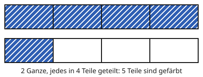
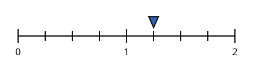

Brüche darstellen
Mit einem KI-Tutor lernen
Ein KI-Tutor erklärt dir diese Seite und hilft dir bei den Übungen. Wähl deinen Assistenten:
Mit Claude öffnen Mit ChatGPT öffnen Mit Mistral Vibe öffnen
Du nutzt dein eigenes Konto beim Anbieter. Der Assistent ist kein Angebot von lernapps.net: lernapps liefert nur Inhalte und Übungen. Die Wahl gilt für alle Seiten, nur auf diesem Gerät.
Derselbe Bruch, verschiedene Bilder
Du kennst schon den Streifen: Er ist das Ganze, in gleich große Teile geteilt. Ein Ganzes kann aber auch eine runde Pizza sein oder eine Strecke. Der Bruch bleibt derselbe, nur das Bild ändert sich. Den Zahlenstrahl kennst du von den natürlichen Zahlen.
Kreis und Zahlenstrahl
Im Kreis ist die ganze Scheibe das Ganze. Sie ist in gleich große Stücke geteilt, wie eine Pizza. Die gefärbten Stücke mit Streifen sind die genommenen Teile.

Der ganze Kreis ist das Ganze. Zähle zuerst alle Stücke, dann die gefärbten.
Quelle: eigene Zeichnung. Lizenz: CC-BY-4.0.Am Zahlenstrahl ist das Ganze die Strecke von 0 bis 1. Sie ist in gleich lange Abschnitte geteilt. Der Bruch zeigt, wie viele Abschnitte du von der 0 aus gehst. Das Dreieck markiert den Punkt, an dem du ankommst.

Zähle die Abschnitte von 0 bis 1 und dann die Abschnitte bis zum Dreieck.
Quelle: eigene Zeichnung. Lizenz: CC-BY-4.0.Zähle Abschnitte, nicht Striche
Am Zahlenstrahl zählst du die Abschnitte zwischen den Strichen. Die 0 ist der Anfang und zählt nicht als Abschnitt.
Wenn der Zähler größer wird als der Nenner
Vier Viertel sind ein ganzer Streifen. Nimmst du noch ein Viertel dazu, brauchst du einen zweiten Streifen. Du hast dann fünf Viertel und schreibst . Der Zähler ist größer als der Nenner. Das heißt: mehr als ein Ganzes.

Jeder Streifen ist ein Ganzes. Zähle alle gefärbten Teile in beiden Streifen.
Quelle: eigene Zeichnung. Lizenz: CC-BY-4.0.
Der Zahlenstrahl reicht bis 2. Zwischen zwei ganzen Zahlen liegen vier Abschnitte.
Quelle: eigene Zeichnung. Lizenz: CC-BY-4.0.Übung
Übung
Lösung
5/8 richtige Antwort
Die 8 Stücke sind alle gleich groß, also ist der Nenner 8. Gefärbt sind 5 davon: Zähler 5.
3/8
Das wären die 3 weißen Stücke. Der Bruch gehört zu den gefärbten Stücken.
5/3
Der Nenner zählt alle gleich großen Teile des Ganzen, nicht nur die weißen. Hier sind es 8.
8/5
Zähler und Nenner sind vertauscht: Der Nenner steht für die Teile des Ganzen, der Zähler für die genommenen.
Der Nenner ist die Zahl aller gleich großen Teile, der Zähler die Zahl der gefärbten.
Mehr dazu:
Übung
Lösung
3/4 richtige Antwort
Von der 0 bis zum Dreieck sind es 3 Abschnitte, und 4 Abschnitte machen das Ganze.
4/3
Zähler und Nenner sind vertauscht. Ein Ganzes besteht hier aus 4 Abschnitten.
1/4
Das wäre ein Abschnitt von der 0 aus. Das Dreieck steht weiter rechts.
3/5
Du hast die Striche gezählt, nicht die Abschnitte. Zwischen 0 und 1 sind 4 Abschnitte, nicht 5.
Am Zahlenstrahl zählst du Abschnitte: 4 Abschnitte bis zur 1, 3 Abschnitte bis zum Dreieck.
Mehr dazu:
Übung
Lösung
Richtige Antwort: Die Aussage stimmt.
5/4 sind fünf Viertel. Vier Viertel sind schon ein Ganzes, also ist 5/4 mehr als ein Ganzes.
Mehr dazu:
Übung
Lösung
Richtige Antwort: 1
4 Abschnitte machen ein Ganzes. 7 Abschnitte sind 7/4: ein Ganzes und noch 3 Abschnitte.
Mehr dazu: